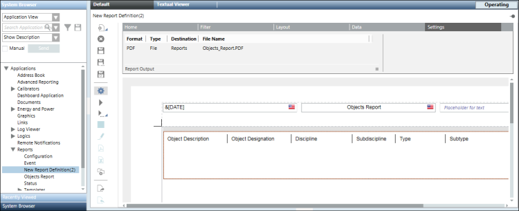

Configure Report Output as a File
- Select Applications > Reports.
- Click the Settings tab.
- From the Report Output group box, click Dialog Launcher
 .
. - The Report Output Definition dialog box displays.
- Select File as the destination type in the Destination types list.
- Click Configure Folders.
- The Report Output Folders Configuration dialog box displays.
- In the Folder Alias field, type a name for the Report Output folder.
- Click Browse to select a destination folder.
- The selected destination path displays in the Folder Path field.
- (Optional) In the Folder Description field, type the folder description.
- Click New.
- The output folder is added to the List of Folders for the Report Output section.
- Click Close.
- The configured output folders display in the File drop-down list of the Report Output Definition dialog box.
- Select the required report format (PDF, XLS, CSV, or XML) in the Report format list.
- Select File in the Destination types list.
- From the File drop-down list, select the destination folder where you want to save the file.
- The File drop-down list displays all the report output folders that you have configured.
- Select Enter custom file name to add the file name. The default option is Use report name as file name.
- Do one of the following:
- Select the Append date/time to file name check box to add the date and time to the file name when saved.
NOTE: The Create new/overwrite existing file and Append data options become unavailable when you select the
Append date/time to file name check box. - Select the Append data option button to append data in the same folder but creating new document with incremental number.
- Select Create new/overwrite existing file to create a new file or overwrite the existing file with the same file name.
- Click New.
- The selected format, destination, and file name are added to the Output Definition list.
- Click OK.
- Configured Report Output Definitions display in the Report Output group box.
